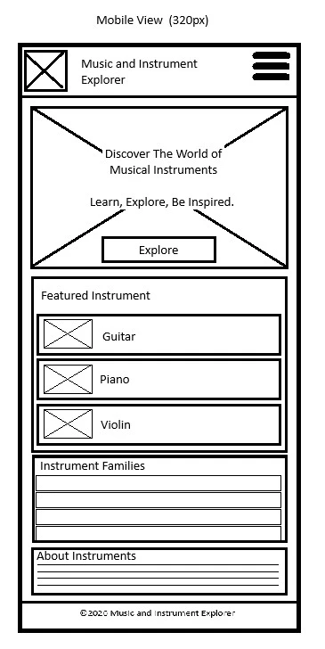
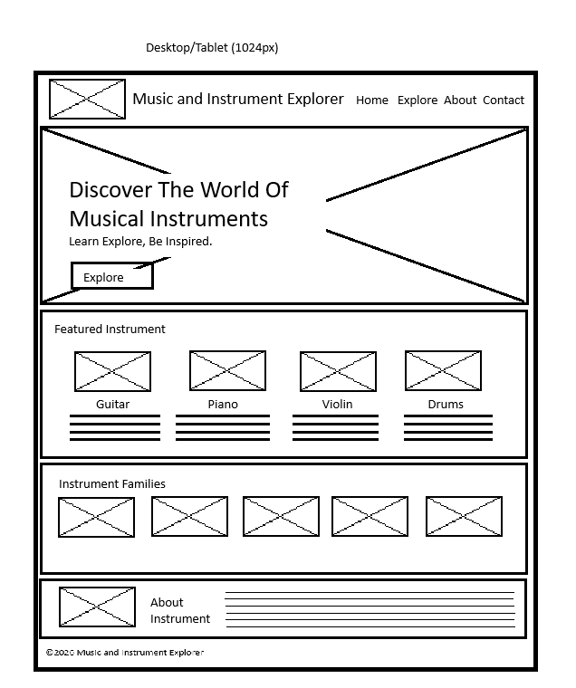

Site Name
Music & Instrument Explorer
The name "Music & Instrument Explorer" was selected because the website will help visitors discover and learn about different musical instruments and their characteristics. The name clearly represents the educational and exploratory purpose of the website.
Optional Domain: musicinstrumentexplorer.com
Site Purpose
Music & Instrument Explorer will provide an interactive resource for people who want to learn about musical instruments. Visitors will be able to browse instruments from different musical families and learn about their characteristics, difficulty levels, and other useful information.
The website will also allow visitors to explore detailed instrument information and save instruments that interest them for future reference.
Scenarios
The following questions represent situations that visitors to the website may have:
- What musical instrument would be suitable for a beginner who wants to learn music?
- What instruments belong to the string, percussion, woodwind, brass, and keyboard families?
- Can I save instruments that I am interested in so I can view them again later?
Color Scheme
The website will use a simple color scheme inspired by professional music and educational websites.
Deep Navy
#1D3557
Used for the header, footer, navigation, headings, and other important interface elements.
Warm Gold
#E9C46A
Used for buttons, highlights, accents, and important interactive elements.
Off White
#F8F9FA
Used as the primary background color to provide a clean and readable layout.
Charcoal
#212529
Used primarily for paragraph text and other normal website content.
Typography
Montserrat
Montserrat will be used for the website title, headings, navigation links, and buttons. It provides a modern and strong appearance for important text.
Roboto
Roboto will be used for paragraphs, instrument descriptions, form labels, and other body content. It provides good readability on both desktop and mobile screens.
Wireframes
The following wireframes show the planned layout of the Music & Instrument Explorer home page on mobile and larger screens.
Mobile View

Desktop / Tablet View
